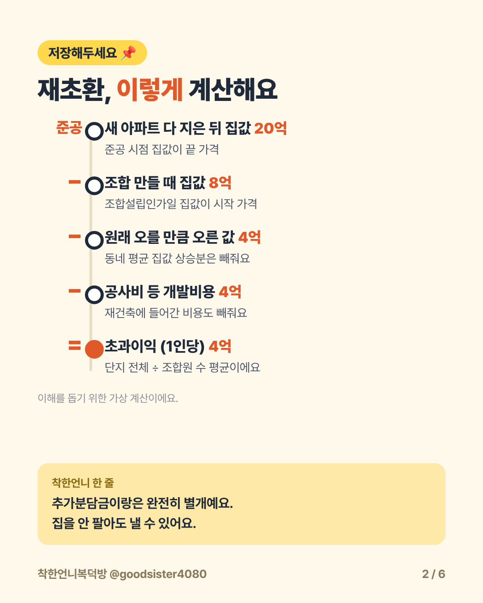
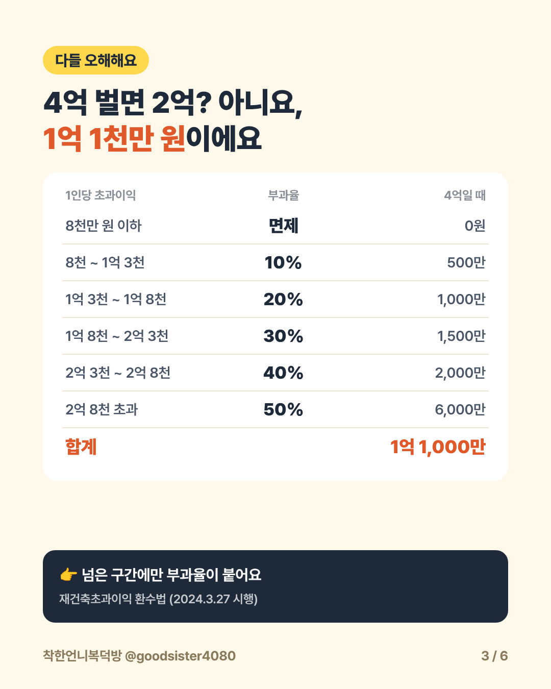
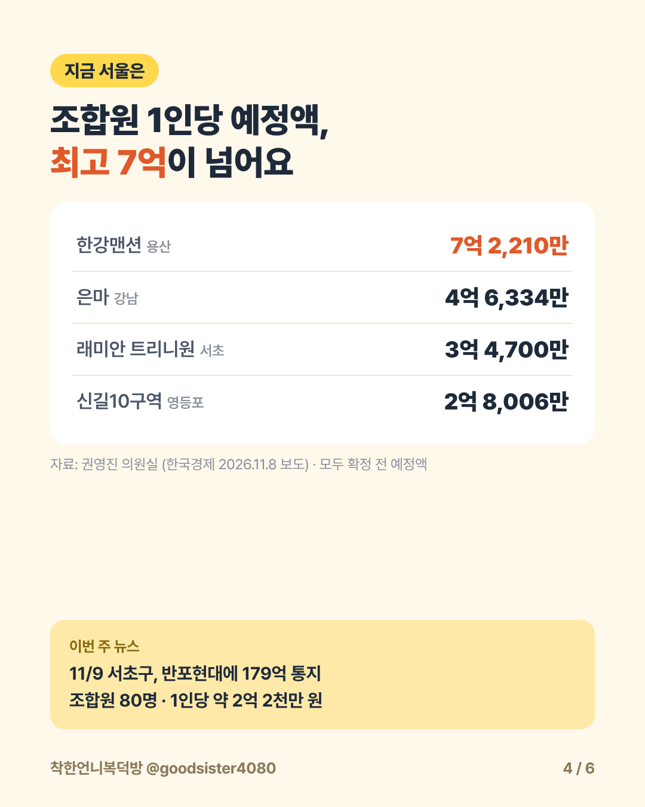
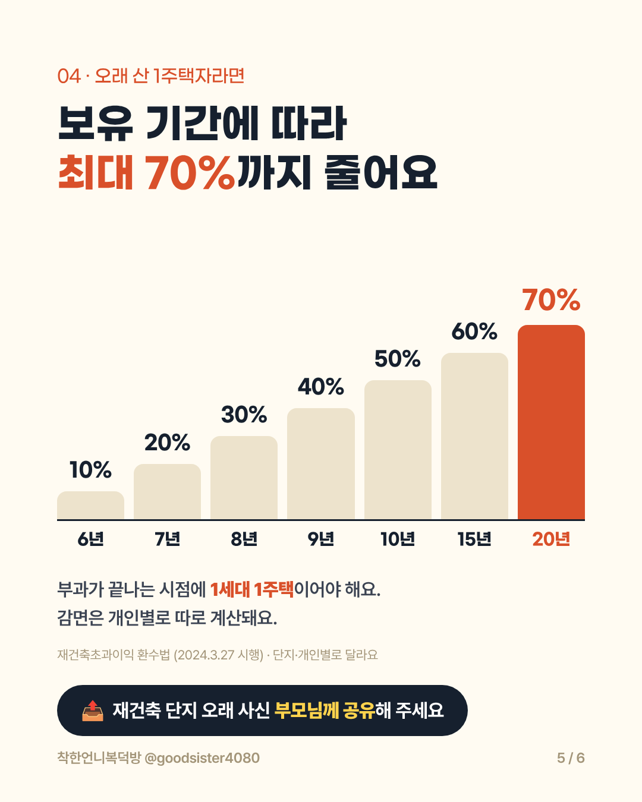

✍️ [직접 채우기: 도입 — 재건축 아파트 상담에서 실제로 받은 재초환 질문 한 장면 (익명화, 확인된 것만)]
안녕하세요. 착한언니복덕방 신촌자이엘라&마포그랑자이 (착한언니) 부동산입니다.
요즘 뉴스에 재초환 이야기가 정말 많죠.
은마 조합원 1인당 예정액이 4억 6,334만 원이라는 기사도 나왔어요.
그런데 막상 "재초환이 정확히 뭐고, 나도 내야 하나?" 물으면 헷갈리는 분이 많아요.
오늘은 숫자로 한 번에 정리해 드릴게요.
| 1. 재초환이 뭐예요? 오른 집값 전부가 아니에요 |
재초환은 재건축초과이익환수제의 줄임말이에요.
재건축으로 집값이 많이 오르면, 나라가 "원래 오를 만큼 오른 값이랑 공사비는 빼줄게.
그런데 재건축으로 더 번 돈은 일부 내!" 하는 제도예요.
| 단계 | 숫자 (가상 예시) |
| 새 아파트 다 지은 뒤 집값 (준공) | 20억 |
| − 조합 만들 때 집값 (조합설립인가일) | 8억 |
| − 원래 오를 만큼 오른 값 (동네 평균 상승분) | 4억 |
| − 공사비 등 개발비용 | 4억 |
| = 1인당 초과이익 | 4억 |
이해를 돕기 위한 가상 계산이에요 · 실제로는 단지 전체 초과이익을 조합원 수로 나눈 평균으로 계산해요

📷 [이미지 업로드: 카드 2장 · 재초환 계산 순서 → 오른쪽 '이미지 내려받기']
여기서 꼭 기억할 두 가지가 있어요.
✔ 추가분담금과는 완전히 별개예요. 분담금을 냈어도 재초환은 따로 나와요.
✔ 집을 안 팔아도 낼 수 있어요. 판 이익이 아니라 재건축 전후 집값 차이로 계산해요.
| 2. 얼마나 내요? 4억 벌면 2억이 아니에요 |
"최대 50%"라는 말 때문에 4억의 절반인 2억을 낸다고 생각하기 쉬운데요,
구간별로 나눠서 넘은 부분에만 부과율이 붙어요.
| 1인당 초과이익 구간 | 부과율 | 4억일 때 |
| 8천만 원 이하 | 면제 | 0원 |
| 8천만 ~ 1억 3천 | 10% | 500만 원 |
| 1억 3천 ~ 1억 8천 | 20% | 1,000만 원 |
| 1억 8천 ~ 2억 3천 | 30% | 1,500만 원 |
| 2억 3천 ~ 2억 8천 | 40% | 2,000만 원 |
| 2억 8천 초과 | 50% | 6,000만 원 |
| 합계 | 1억 1,000만 원 |
「재건축초과이익 환수에 관한 법률」 2024.3.27 시행 기준
초과이익 4억 중 약 27%, 1억 1천만 원이에요.

📷 [이미지 업로드: 카드 3장 · 부과율 구간표 → 오른쪽 '이미지 내려받기']
| 3. 지금 서울은 얼마나 나왔나요? |
아래는 기사로 확인된 조합원 1인당 예정액이에요.
확정 금액이 아니라 집값과 사업 기간에 따라 바뀌는 미리보기 금액이에요.
| 단지 | 지역 | 1인당 예정액 |
| 한강맨션 | 용산 이촌동 | 7억 2,210만 원 |
| 은마아파트 | 강남 대치동 | 4억 6,334만 원 |
| 래미안 트리니원 (옛 반포3주구) | 서초 반포동 | 3억 4,700만 원 |
| 신길10구역 | 영등포 신길동 | 2억 8,006만 원 |
권영진 의원실 자료(한국경제 2026.11.8 보도) · 예정액이며 이의신청·감면을 거쳐 확정돼요
그리고 11월 9일에는 서초구가 반포현대 조합에 재초환 179억 원을 통지했어요.
조합원 80명, 1인당 약 2억 2천만 원이에요. 조합은 50일 안에 이의를 제기할 수 있어요.

📷 [이미지 업로드: 카드 4장 · 서울 1인당 예정액 → 오른쪽 '이미지 내려받기']
| 4. 오래 산 1주택자는 최대 70%까지 줄어요 |
2024년 개정법부터 1세대 1주택 장기 보유자 감면이 생겼어요.
부과가 끝나는 시점에 1세대 1주택이어야 하고, 보유 기간에 따라 줄어요.
| 보유 기간 | 6년 | 7년 | 8년 | 9년 | 10년 | 15년 | 20년 |
| 감면율 | 10% | 20% | 30% | 40% | 50% | 60% | 70% |
「재건축초과이익 환수에 관한 법률」 2024.3.27 시행 기준 · 실제 감면은 개인별로 따로 계산돼요

📷 [이미지 업로드: 카드 5장 · 장기 보유 감면 그래프 → 오른쪽 '이미지 내려받기']
재건축 단지에 오래 사신 부모님이 계시다면 이 부분은 꼭 알려 드리세요.
| 5. 재초환 통지서, 언제 날아와요? |
| 시점 | 무슨 일 | 알아둘 것 |
| 조합설립인가 | 계산 시작 | 이때 집값이 시작 가격 |
| 사업시행인가 후 | 첫 예정액 통지 | 확정 금액 아님 · 미리보기 |
| 그 뒤 매년 | 예정액 다시 안내 | 집값 변동에 따라 금액이 바뀜 |
| 준공 | 계산 종료 | 새 아파트 집값이 끝 가격 |
| 준공 후 | 부담금 사전통지 | 받은 날부터 50일 안에 심사 청구 가능 |
| 준공 후 5개월 안 | 부과 확정 | 확정 고지 |
| 부과일부터 6개월 안 | 납부 | 1차 납부는 조합 · 조합 해산·체납 시 조합원에게 넘어갈 수 있음 |
「재건축초과이익 환수에 관한 법률」·찾기쉬운 생활법령정보 기준 · 단지별 실제 일정은 달라요
| 6. 재건축 아파트, 이 가격에 사도 될까? 내 돈 계산표 |
지금 재건축 아파트를 사려는 분이라면 이 순서로 직접 써 보세요.
| 칸 | 예시 | 내 아파트 |
| A. 새 아파트 예상가 (주변 신축 실거래) | 20억 | |
| B. 추가분담금 | 4억 | |
| C. 예상 재초환 (예정액 통지 금액 또는 시나리오) | 1억 1천 | |
| D. 취득세·이자 등 부대비용 | 대략 | |
| 계산이 맞는 구축 가격 = A − B − C − D | 14억 9천 − D |
가상 예시예요 · 공사비 4억과 추가분담금 4억은 이해를 위해 같게 둔 숫자이고, 법에서 빼주는 개발비용과 분담금은 같은 돈이 아니에요
지금 호가가 "계산이 맞는 구축 가격"보다 비싸면,
재초환만큼 손해 보고 시작하는 거예요.
예상 재초환을 모를 땐 C칸을 0원 · 1억 · 2억 · 3억으로 바꿔 가며 써 보세요.
재초환이 얼마까지 나와도 괜찮은지 내 기준선이 보여요.
| 7. 착한언니 현장 노트 |
✔ 재초환은 재건축에 매기는 부담금이에요. 같은 정비사업이라도 재개발과 헷갈리지 마세요.
✔ 내 단지가 어느 단계인지는 서울시 정비사업 정보몽땅(cleanup.seoul.go.kr)에서 조합설립인가·사업시행인가 날짜로 확인해요.
✔ 준공 전에 입주권을 샀다면, 재초환을 낼 수 있는 조합원이 바로 나예요. 계약 전에 최근 예정액 통지 금액부터 확인하세요.
✍️ [직접 채우기: 현장 노트 — 마포·서대문 재건축·재개발 매물 상담에서 실제로 확인하는 순서 (확인된 것만)]
| 8. 자주 묻는 질문 |
Q. 재초환, 지금도 적용되는 거 맞아요?
네. 2006년 도입, 2013~2017년 유예 후 2018년부터 다시 적용 중이에요.
2019년 헌법재판소 합헌 결정을 받았고, 2024년 3월 개정법이 시행 중이에요. 폐지 법안은 국회에 계류 중이에요(2026년 11월 기준).
Q. 추가분담금 냈는데 또 내요?
네, 둘은 완전히 별개예요. 분담금은 새 아파트를 짓는 내 몫이고, 재초환은 재건축으로 생긴 이익에 매기는 부담금이에요.
Q. 누가 내요?
1차로는 재건축조합이 내요. 조합이 해산했거나 감당하지 못하면 조합원에게 넘어갈 수 있어요.
| 9. 정리하면 |
✔ 재초환은 오른 집값 전부가 아니라 '더 번 돈'(초과이익)에 매겨요
✔ 1인당 초과이익 8천만 원까지 0원, 넘은 구간에만 10~50%
✔ 추가분담금과 별개, 집을 안 팔아도 나올 수 있어요
✔ 오래 보유한 1세대 1주택자는 최대 70% 감면
✔ 재건축 아파트 살 땐 A − B − C − D 계산부터
재건축 단지에 사시는 부모님·지인께 이 글을 꼭 전해 주세요.
인스타그램 @goodsister4080 게시물에 '재초환' 댓글을 남기시면
재건축 내 돈 계산표와 서울 재건축 89곳 리스트를 DM으로 보내 드려요.
새 글 알림을 받고 싶으시다면 블로그 이웃 추가 해 두세요. 재건축·재개발 매수 전 체크 순서를 이어서 정리할게요.
카카오톡 채널 착한언니복덕방 친구 추가 후 매수·매도·전월세 상담을 편하게 남겨 주세요.
인스타그램 @goodsister4080 에서는 이런 내용을 카드뉴스로 한눈에 정리해요.
쉽고 꾸준하게, 꼭 부자되세요!
────────────────
「재건축초과이익 환수에 관한 법률」(2024.3.27 시행) 및 언론 보도(2026.11) 기준이에요 · 예정액은 확정 금액이 아니며 실제 부담금은 단지·개인별로 달라요 · 투자 권유가 아닌 정보 제공용이에요
착한언니복덕방 | 신촌자이엘라 & 마포그랑자이 부동산
4인 전원 공인중개사 · 중개보조원 없음
중개사무소: 마포그랑자이(착한언니)부동산공인중개사사무소
대표 공인중개사: 신혜선 · 등록번호 11440-2022-00085
소재지: 서울특별시 마포구 대흥로 175, 상가4동 102호 일부 (대흥동) · 연락처: 02-707-3434
서울시 지정 글로벌 부동산중개사무소 · English available
카카오톡 채널: pf.kakao.com/_xcxoBxnX